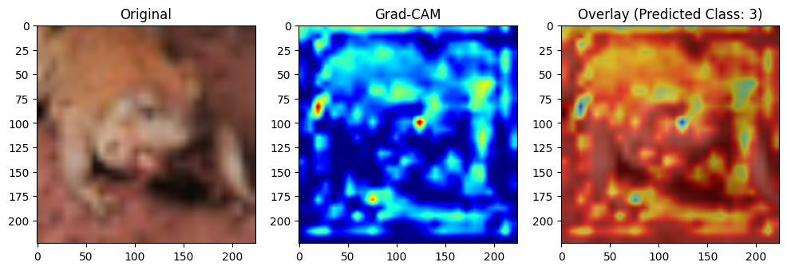

🔍 Grad-CAM++ in PyTorch — Visualizing What Your CNN Sees¶
Grad-CAM++ is a powerful tool for visualizing where your convolutional neural network is focusing when making a prediction. In this tutorial, we walk through a full implementation of Grad-CAM++ using PyTorch, explain each step, and visualize the result.
📦 What This Does¶
This repo provides a GradCAMPlusPlus class that:
- Hooks into the CNN’s target convolutional layer.
- Computes gradients and activations for the target class.
- Generates class-specific heatmaps.
- Visualizes attention over the original image.
🧠 What is Grad-CAM++?¶
Grad-CAM++ is an improvement over Grad-CAM. It: - Localizes features better (especially small objects). - Handles multiple relevant regions. - Computes per-pixel importance via higher-order gradients.
✅ Code Overview¶
📚 Required Imports¶
import torch
import torch.nn.functional as F
import numpy as np
import cv2
import matplotlib.pyplot as plt
🔧 GradCAMPlusPlus Class¶
class GradCAMPlusPlus:
def __init__(self, model, target_layer):
self.model = model.eval()
self.target_layer = target_layer
self.activations = None
self.gradients = None
self._register_hooks()
def _register_hooks(self):
def forward_hook(module, input, output):
self.activations = output
def backward_hook(module, grad_input, grad_output):
self.gradients = grad_output[0]
self.target_layer.register_forward_hook(forward_hook)
self.target_layer.register_backward_hook(backward_hook)
def generate_heatmap(self, input_tensor, class_idx=None):
input_tensor = input_tensor.requires_grad_()
output = self.model(input_tensor)
if class_idx is None:
class_idx = output.argmax().item()
self.model.zero_grad()
class_score = output[0, class_idx]
class_score.backward(retain_graph=True)
grads = self.gradients[0] # (C, H, W)
activations = self.activations[0] # (C, H, W)
grads_power_2 = grads ** 2
grads_power_3 = grads ** 3
sum_activations = torch.sum(activations, dim=(1, 2), keepdim=True)
eps = 1e-8
alpha_numer = grads_power_2
alpha_denom = grads_power_2.mul(2) + sum_activations * grads_power_3
alpha_denom = torch.where(alpha_denom != 0.0, alpha_denom, torch.ones_like(alpha_denom) * eps)
alphas = alpha_numer / alpha_denom
weights = torch.sum(alphas * F.relu(grads), dim=(1, 2)) # (C,)
# Weight the activations
heatmap = torch.sum(weights[:, None, None] * activations, dim=0).cpu().detach().numpy()
heatmap = np.maximum(heatmap, 0)
heatmap = (heatmap - heatmap.min()) / (heatmap.max() - heatmap.min() + eps)
return heatmap, class_idx
def visualize(self, heatmap, original_image, class_idx, colormap=cv2.COLORMAP_JET):
# Resize heatmap to match image size
heatmap_resized = cv2.resize(heatmap, (original_image.shape[1], original_image.shape[0]))
heatmap_colored = cv2.applyColorMap(np.uint8(255 * heatmap_resized), colormap)
overlay = cv2.addWeighted(original_image, 0.5, heatmap_colored, 0.5, 0)
# Plot
plt.figure(figsize=(12, 4))
plt.subplot(1, 3, 1)
plt.imshow(original_image)
plt.title("Original")
plt.subplot(1, 3, 2)
plt.imshow(heatmap_resized, cmap='jet')
plt.title("Grad-CAM")
plt.subplot(1, 3, 3)
plt.imshow(overlay)
plt.title(f"Overlay (Predicted Class: {class_idx})")
plt.show()
🧪 Example Usage¶
gradcam_pp = GradCAMPlusPlus(model, target_layer=model.layer2[1].conv2)
heatmap, class_idx = gradcam_pp.generate_heatmap(input_tensor)
# Visualize same as before using `original_img`
gradcam.visualize(heatmap, original_img, class_idx)
🎯 Output¶
You’ll see: - The original image - The Grad-CAM++ attention heatmap - An overlay showing where the model was looking when it predicted the class
🧠 Why This Is Important¶
- Gives you insights into what your model is focusing on
- Improves interpretability and debugging
- Essential for model explainability in real-world applications
🛠️ Output¶
